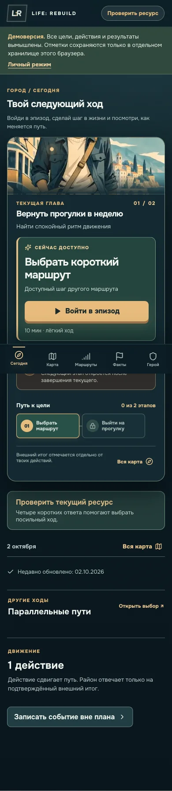

KadrLine
Кадровая заявка проходит проверку, получает ответственного и срок. Результат можно открыть и выгрузить.
Я Иван Епифанов. Пришёл в цифровые продукты из HR и операционного управления. Формулирую задачу, ставлю Codex конкретные задачи и проверяю результат на пользовательском сценарии.
Посмотреть проекты01 / Проекты
В каждом кейсе есть рабочий сценарий, моя роль и то, что пока не удалось подтвердить.
Кадровая заявка проходит проверку, получает ответственного и срок. Результат можно открыть и выгрузить.
В LIFE человек выбирает маршрут, отмечает свой шаг и отдельно фиксирует результат, который зависит от других людей.

В поиске работы я веду отдельные статусы для найденной вакансии, подготовленного отклика, отправки и ответа. На сайте показан вымышленный журнал без переписки.
02 / Навыки
Откройте демо или разбор: там видно, как устроен процесс и где заканчивается проверенное.
Заявка на вымышленных данных проходит проверку, назначение ответственного и фиксацию результата.
Кейс KadrLine ↗В демо LIFE можно пройти маршрут без моего личного плана. Данные демо хранятся отдельно.
Кейс LIFE ↗SQL-запрос убирает дубли в вымышленном журнале. Подготовка отклика, отправка и ответ остаются разными событиями.
Кейс Job Operations ↗Для каждого релиза фиксирую результаты тестов, проверку в браузере и ограничения опубликованной версии.
Технический разбор LIFE ↗03 / Как я работаю
Сначала разбираюсь, кто будет пользоваться продуктом и что ему нужно сделать. Для первой версии оставляю один законченный сценарий.
Записываю требования и ставлю задачи Codex. Смотрю промежуточный результат, разбираю ошибки и отдельно проверяю работу с данными.
Приёмка включает основной сценарий, мобильный экран и опубликованную версию. Если личная проверка остаётся открытой, я так и пишу в кейсе.
Codex пишет код по моим задачам и проводит часть проверок. Я определяю задачу, принимаю продуктовые решения и отвечаю за то, что показываю как результат. В каждом кейсе указано, что проверено, а что пока остаётся открытым. Проверить цепочку доказательств ↗
04 / Опыт
Я работал с кадровыми документами, сроками, ответственными и процессами между подразделениями. Этот опыт помогает мне ставить задачи для цифровых продуктов и замечать, где инструмент мешает обычной работе.
Директор по персоналу. Объединил HR-процессы пяти производственных площадок, координировал команду из пяти специалистов и создал обучающий портал.
Менеджер по персоналу → директор по персоналу. Восстановил кадровые документы в 13 юрлицах и внедрил Bitrix24 для задач, HR-процессов и коммуникаций.
Руководитель отдела персонала. Выстроил кадровые процессы для запуска комплекса на 70 сотрудников, включая учёт времени и зарплаты в 1С:ЗУП и ЭДО.
05 / Контакт
Рассматриваю роли в операционном управлении, внедрении цифровых решений, продуктовых операциях и HRTech.
Профиль GitHub ↗Для прямой связи используйте контакт, указанный в моём отклике.